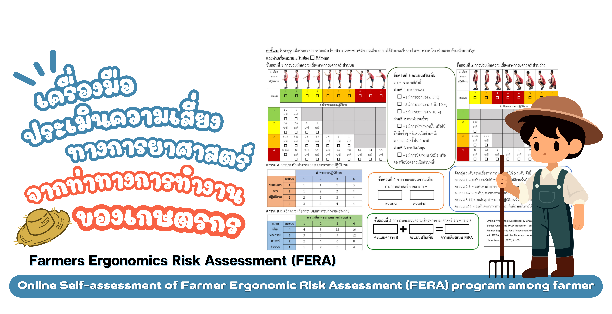

Instructions
This program is used for self-assessment of work posture risk according to FERA guidelines.
How to use
- Read each question and select the answer that best matches your posture
- Illustrations are provided to help you decide
- After completing all questions, the system will show your score and risk level
The results are preliminary assessment only to help improve your work posture.
This is not a medical diagnosis.
Assessment Result

To help improve this online self-assessment program for farmers, please provide your satisfaction level.